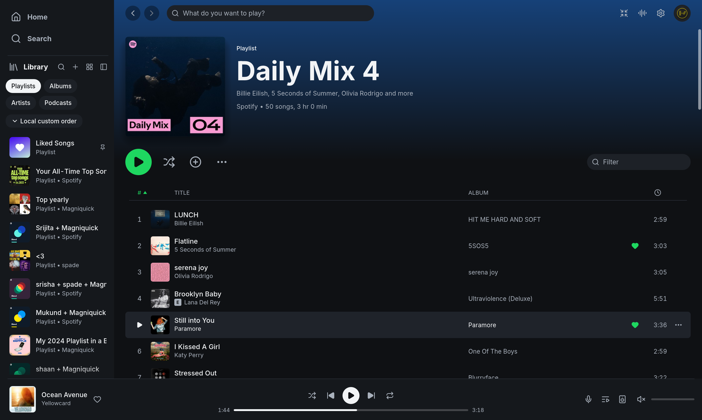
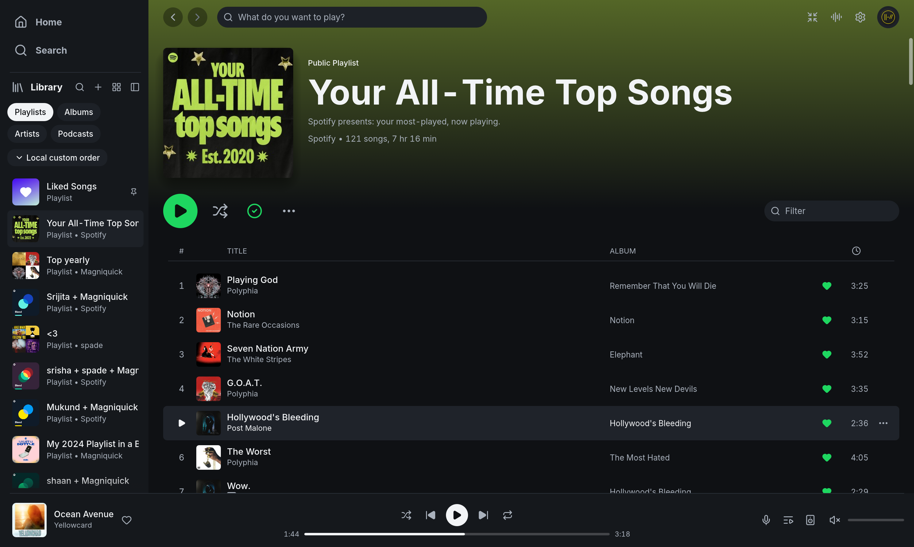

Spotify mixes carry no added dates, or only the 1970-01-01 epoch. Before, the table showed a DATE ADDED heading over an empty column and the album names sat right of their heading. After, a mix has no Date added column. A playlist with real dates is unchanged.
The mix is the demo Discover Weekly with every song dated 1970-01-01, through --demo-show undated-mix, which the PR adds; the baseline build carries the same scene locally.
Baseline: crmne/spotifast main 7e2d6c5. Candidate: Magniquick/spotifast playlist-date-column a36f8c6. Captured on Linux (CachyOS) in a headless Wayland compositor (sway) with demo data; pointer and scrolling driven through a virtual pointer. Keys: b before, a after.
Real-account captures from the running app on Linux (CachyOS, Hyprland), dark theme. Window sizes differ from the demo captures.

